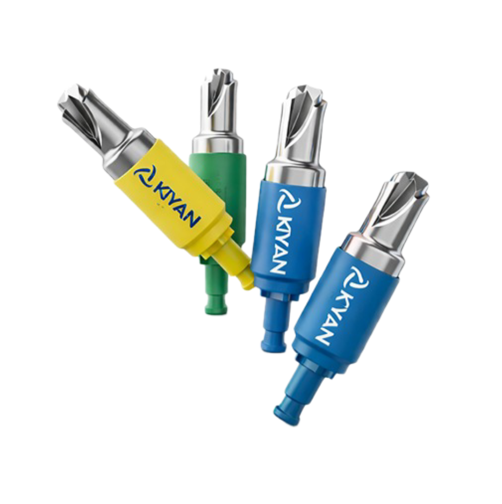
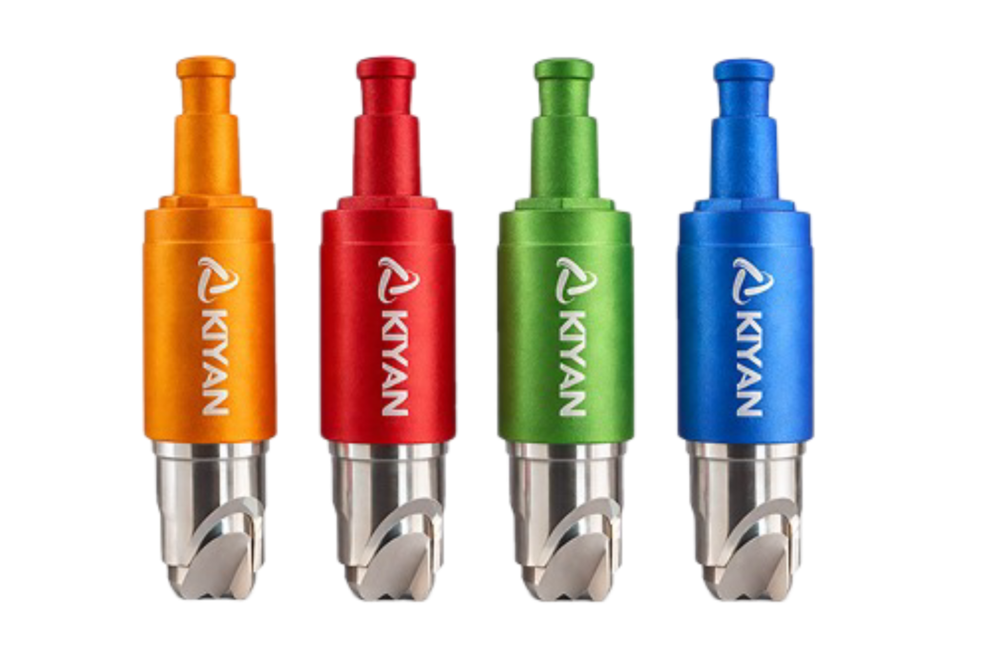

Anos de experiência
Inovação em Neurocirurgia
Precisão
que salva
vidas
Desenvolvemos soluções cirúrgicas de alta performance reconhecidas em mais de 40 países. Tecnologia brasileira com padrão internacional.

Scroll para explorar
Países atendidos
Cirurgiões atendidos
% satisfação clientes
Precisão Cirúrgica Inovação Brasileira ISO 13485 ANVISA Certificada FDA Aprovada CE Mark 40+ Países
Precisão Cirúrgica Inovação Brasileira ISO 13485 ANVISA Certificada FDA Aprovada CE Mark 40+ Países
35+ anos de inovação
Sobre a Kiyan
Tecnologia brasileira com padrão internacional
Atuamos no desenvolvimento de soluções cirúrgicas de precisão, unindo engenharia, segurança e inovação para apoiar profissionais da saúde em procedimentos complexos.
Qualidade
Processos focados em segurança e alta performance.
Inovação
Produtos pensados para evolução cirúrgica.
Precisão
Detalhes técnicos que fazem diferença no procedimento.
Confiança
Reconhecimento em dezenas de países.
Serviços
Soluções para diferentes necessidades cirúrgicas
Do desenvolvimento técnico ao suporte especializado, entregamos soluções completas para instituições e cirurgiões.
Equipamentos Cirúrgicos
Alta performance, precisão e segurança para procedimentos complexos.
Saiba mais →Neurocirurgia
Soluções especializadas para aplicações neurocirúrgicas.
Saiba mais →Suporte Técnico
Atendimento consultivo para uso, manutenção e orientação técnica.
Saiba mais → Produtos
Linha de produtos Kiyan
Conheça soluções desenvolvidas para precisão, controle e segurança.
 EasyDrill
EasyDrill Lançamento
LançamentoSD-05 · Espinal
SpineDrill
Nova linha para procedimentos espinais com tecnologia de ponta.
Conheça o produto →
KiyanKY-02 · Precisão
Kiyan Surgical
Solução robusta para procedimentos de alta complexidade.
Conheça o produto → Fale conosco
Vamos criar
algo juntos
Nossa equipe técnica está pronta para entender suas necessidades e apresentar a solução ideal.
📍
LocalizaçãoSão Paulo, Brasil
✉️
E-mailcontato@kiyan.com.br
📞
Telefone+55 (11) 99999-9999